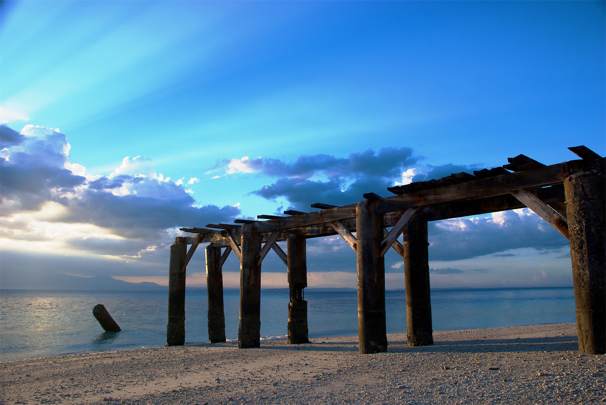
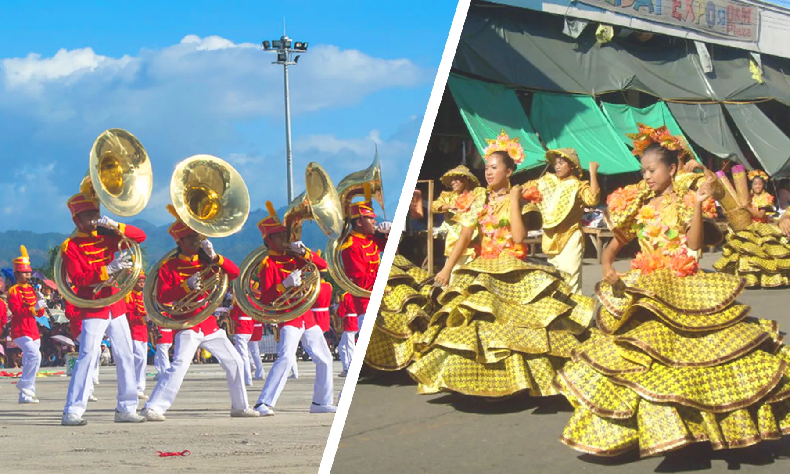
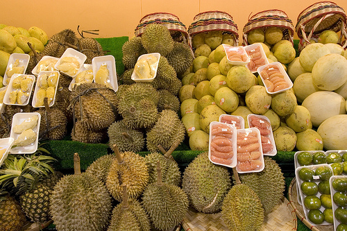

While the province is beautiful year-round, the best time to visit depends on your itinerary. For hiking Mt. Apo and engaging in outdoor adventures, the dry season from March to May is highly recommended to ensure safe and clear trails. If you want to experience the local culture at its peak, plan your visit around July for the provincial anniversary or September for the local festivals.
Enjoy clear skies and safer trails during the dry season from March to May.
Immerse yourself in massive cultural celebrations happening in July and September.
Feast on the cheapest and most abundant durian and pomelos from August to October.
Davao del Sur is geographically blessed. It sits outside the typhoon belt, meaning it rarely experiences the severe storms that affect the northern Philippines. This makes it a fantastic year-round destination, but timing your visit can enhance your specific interests. If your primary goal is to summit Mt. Apo or explore the caves, the dry summer months are essential for safety and clear views. If you are a foodie or a culture enthusiast, align your trip with the Kadayawan season (neighboring Davao City) in August or the Digos City festivals in September to experience peak harvests and vibrant street parties.

The absolute best time for mountaineering, island hopping, and outdoor extreme sports.

Experience the provincial anniversary and the Padigosan festival in full color and sound.

The ultimate time for foodies. Fruit stands overflow with fresh, cheap harvests straight from the farms.
Fly to Francisco Bangoy International Airport in Davao City, then take a bus south.
November to May is the dry season — ideal for outdoor activities and beach trips.
Davao del Sur offers affordable accommodations, food, and transport options.